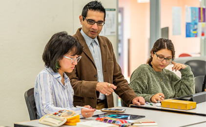

Gautam Wadhwa is a leader, designer, and an educator. He teaches in both the Graphic Design and Media Arts and Game Development (MAGD) programs at the University of Wisconsin in Whitewater, WI, USA. As a design consultant he has worked with clients like: United Nations, Starbucks, World Gold Council, Timex Watches, Lee Copper Footwear, etc. He has been conducting focused and sustainable research in two areas: (1) Design for Social Impact; and (2) Innovative Uses of Technology and Analytics in Design Education. He has presented his research work at selective and internationally prominent conferences like the AIGA Design Educators Conference, UCDA Design Education Summit, International Conference on Design Principles and Practices, and Sloan Consortium Blended Learning Conference and Workshop. In addition he has been awarded several competitive grants to support and carry forward his research work, including—Learning and Technology Development Council Grant and Faculty Development Grant. His research papers have been published in journals like the International Journal of Design Principles and Practices and the International Journal of Arts in Society.
